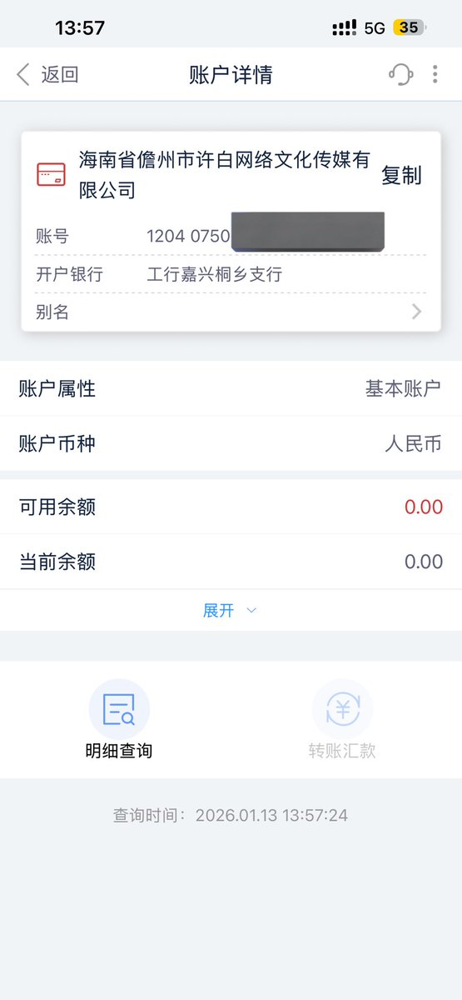

许白🔜东北
@xubai_01
@tatanakots 同上，基本户目前是还款代扣和网银银企直连扣掉了一点都不剩，一般户即使有现金流也是股东和法人打进来的蓝字，资产负债表上可流动性资产都是负的🫠偶尔银行做活动发红包了才能勉强把各种欠款还上，支出目前是外包劳务费和服务器托管费之类的🥹

たたなこ
@tatanakots
@xubai_01 我们不一样，我们公司开展业务就亏更多，最后我们为了止损被迫关停了业务，现在公司依然处于半死不活的无收入只有支出状态
公帐上的借字全都是股东打的，贷都是各项基本支出（服务器费之类的）😇